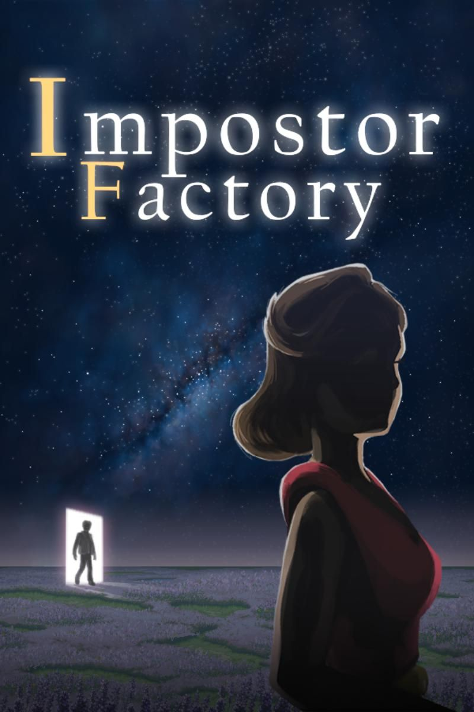
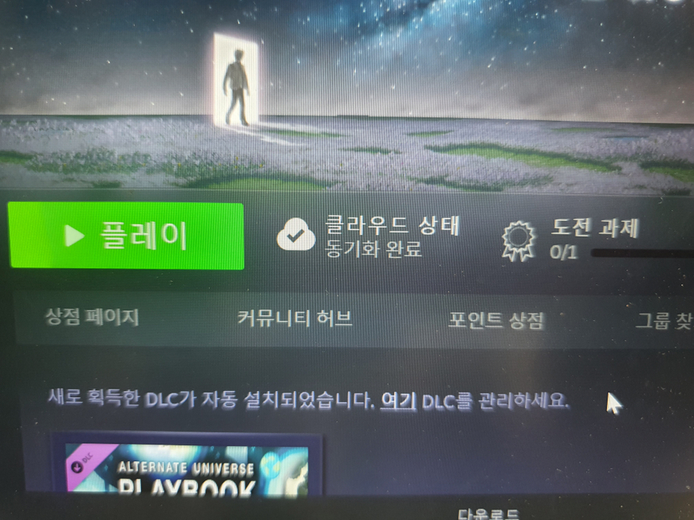
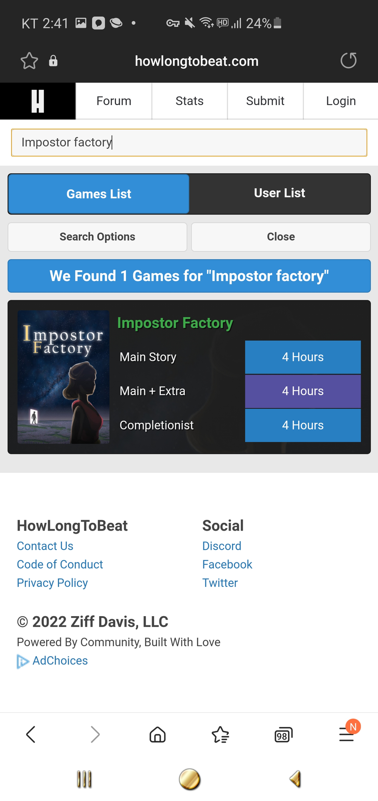
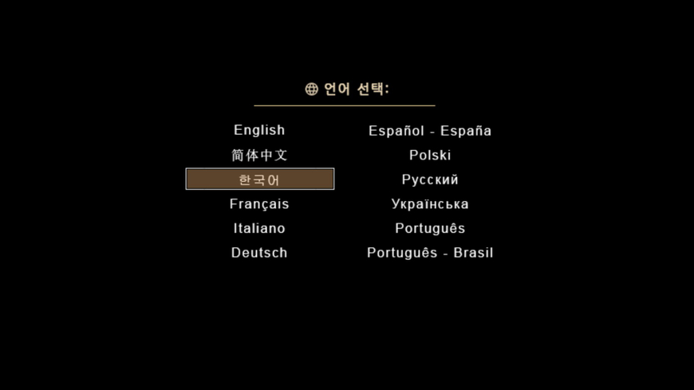
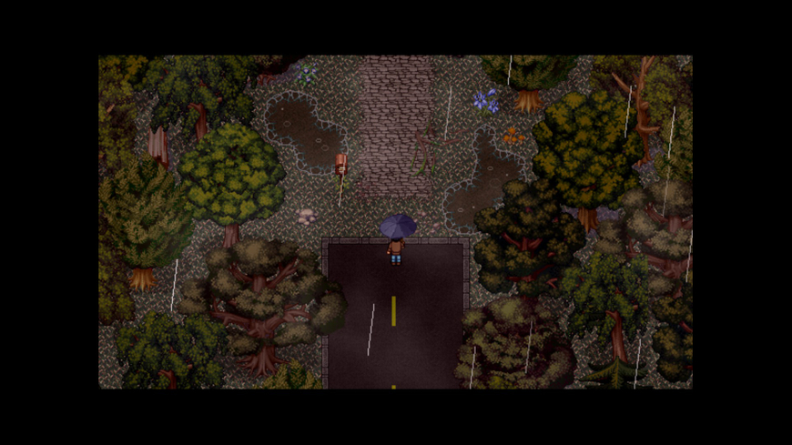
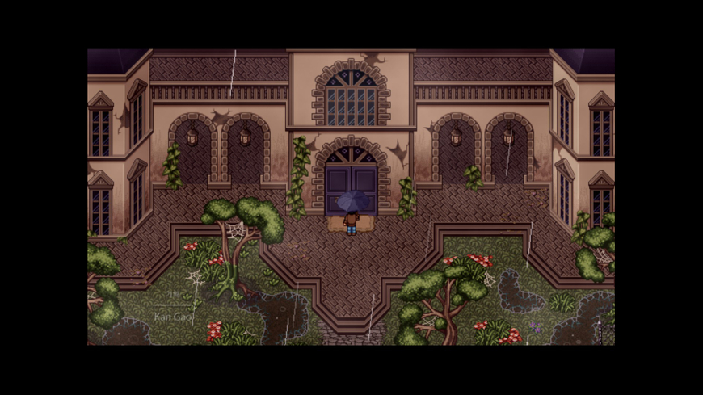
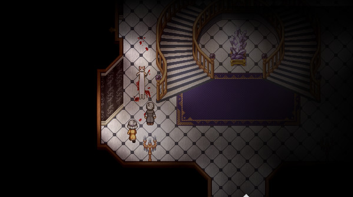
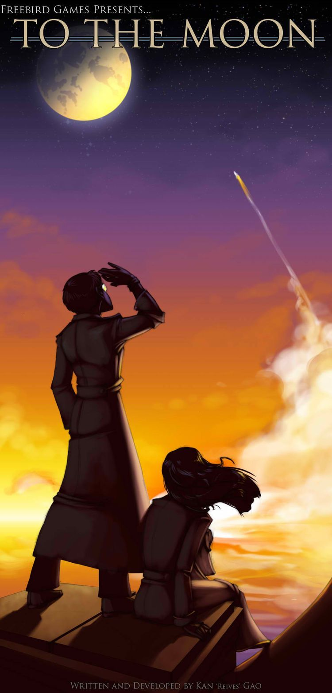
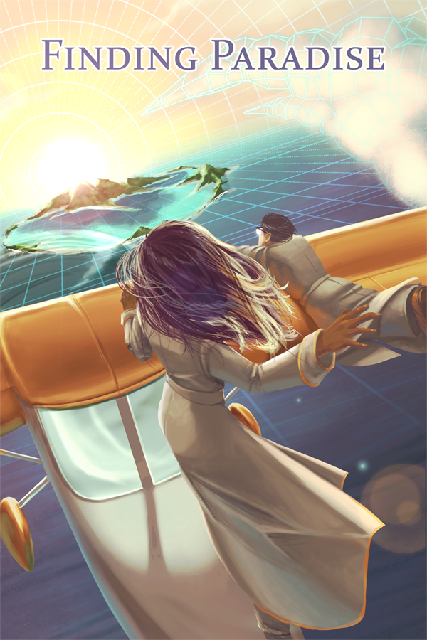
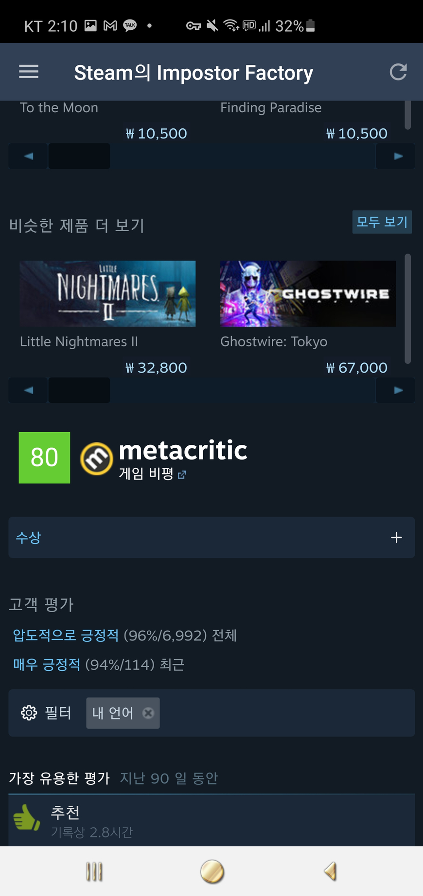

장르: 어드벤처, 인디게임, 롤플레잉
스팀가격: 10500원

(도전과제 한 개 있는 패기를 보십시오)

(플레이타임 깔끔하게 4시간입니다. 파고들기 그딴거 없습니다.)
투더문 제작진들이 만든 게임입니다. 다수의 사상자와 수상한 고양이가 출몰하는 저세상 타임루프 비희극 살인 미스터리 스릴러입니다.
투더문이나 파인딩 파라다이스의 뒤를 잇는 충분히 훌륭한 후속작이라는 것이 중평입니다.
(지원하는 언어의 숫자를 보라. 경이롭지 않은가)



(직접 찍은 스샷들)
투더문, 파인딩 파라다이스에 이은 지그문트 시리즈 세 번째 작품입니다.
작년 가을에 출시됐고 기억 조작으로 임종 직전 의뢰인의 소원을 이뤄주는 지그문트 사의 두 직원 로잘린과 와츠가 주인공이었던 전작과 다르게 이번 남자는 위 스샷에 있는 '퀸시'가 주인공입니다. 외딴 저택에서 열리는 파티에 초대받은 퀸시가 살인사건을 회격 후 시간여행을 통해 루프를 뺑뺑이 돌며 시작합니다.
스토리는 세 파트로 나뉩니다.
첫번째 파트에서는 살인사건이라는 충격적인 전개로 흥미를 유도
두번째 파트에서는 인간드라마
세번째 파트에서는 떡밥 해소 및 결말이라는 각자의 매력을 가진 파트들이 서로 자연스럽게 이어져 있어 따로 놀지않는 점이 작품에 있어 가장 큰 장점입니다.
그리고 전작인 파인딩 파라다이스에 이어 좀 더 철학적인 주제의 스토리도 호평입니다.
또한 연출에서도 쯔꾸르의 한계를 뛰어넘었다고 합니다. 자세한건 스포라서 생략하겠습니다.
퍼즐이나 미니게임들은 전작에 비해 많이 줄었다고 합니다. 하지만 어쭙잖은 게임으로 몰입을 깨는 것보다 스토리에 몰입을 할 수 있게 해줘서 호평입니다.
이 게임을 하시기 전에 주의해야할 점이 있는데 전작인 투더문과 파인딩 파라다이스를 플레이하셔야 후반부 전개를 완벽히 이해할 수 있습니다. 왜냐면 이 게임이 시리즈의 마지막을 장식하는 피날레같은 게임이기 때문입니다. 전작들도 모두 명작이니 플레이해보시길 바랍니다.


(투더문, 파인딩 파라다이스, 임포스터 팩토리)
(타이틀 테마 영상)
(트레일러 영상)
(공식 트레일러 영상)

평가-메타크리틱 80, 스팀 평가 압도적 긍정적(96%)
투더문도 쯔꾸르계의 불후의 명작 아닙니까? 이 게임도 그에 못지 않은 게임같습니다. 저도 플레이 도중이지만 명작임을 느끼고 있습니다. 여러분도 해보십쇼
P.s
현재 이브 리메이크 스팀 평가 100%
후원댓글 15개
댓글 15개 ▼